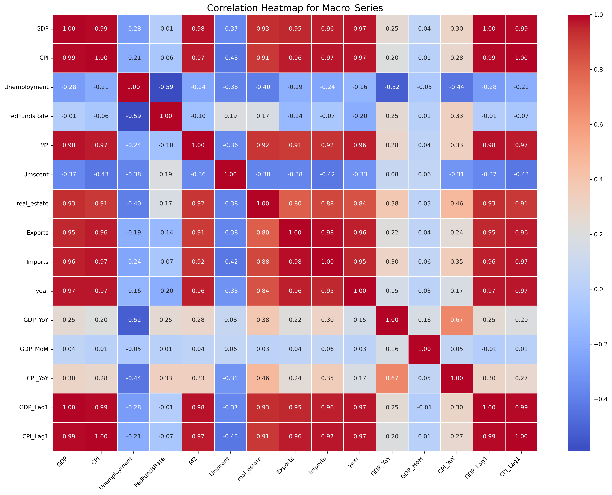
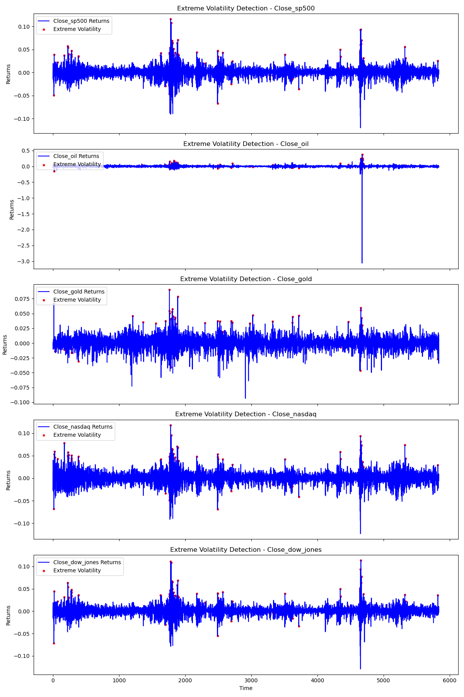

Final Report
Market pattern analysis and portfolio optimization through machine learning methods
In today’s complex financial markets, understanding the interactions between different market assets, macroeconomic indicators and technical factors is important for effective investment decisions. To address this problem, our project leverages data science techniques to analyze market behavior patterns, identify relationships between different asset classes, and develop portfolio optimization strategies.
As global markets become increasingly more volatile and interconnected, investors have greater challenges and opportunities. Traditional market analysis methods often struggle to capture the complex dynamics between various market assets and their responses to economic changes. In addition, market conditions change rapidly, requiring more sophisticated methods to detect abnormal market behavior and predict potential market trends.
This project addresses these issues through a comprehensive analytical framework that combines machine learning, statistical modeling and technical analysis. Through the analysis of many aspects of financial markets, we aim to provide theoretical insights into market behavior and provide practical tools for market analysis and portfolio management. In addition, we also hope that the results of this research can be useful for investors, analysts and financial institutions to effectively analyze the market environment and optimize investment strategies.
Objective
This research aims to enhance market analysis and investment decision-making through the following objectives:
1. Market Pattern Analysis and Prediction
Examine the predictability of short-term market returns
Evaluate the effectiveness of various technical indicators
Develop machine learning models to capture market patterns
2. Macroeconomic Impact Assessment
Investigate the complex relationship between macroeconomic indicators and market performance
Analyze how different asset classes respond to economic changes
Identify key economic drivers for market movements
3. Technical Analysis Framework Development
Combine technical indicators with future earnings analysis
Study correlations between technical indicators and market performance
Develop reliable market analysis and forecasting frameworks
4. Investment Decision Support
Create practical tools for market analysis
Develop portfolio management strategies
Provide actionable insights for investment decisions
Data Source
Our data collection approach uses three main methods to ensure we assemble a comprehensive data set that captures macroeconomic fundamentals and market performance indicators. Through the FRED API, we obtain comprehensive macroeconomic data, including key indicators such as GDP, CPI, unemployment rate, and government bond yields. Next, integration with the BEA API allows us to collect detailed national income as well as personal income, consumption indicators and government spending information. Additionally, we used Yahoo Finance to retrieve market data, which includes major market indexes such as the S&P 500, Nasdaq, and Dow Jones, as well as commodity prices such as gold and crude oil and their daily market indicators.
Key Findings
- Market Classification and Characteristics
Stock market indices (Nasdaq, Dow Jones, S&P 500) demonstrate strong correlations (0.88-0.97), suggesting similar movement patterns
Gold exhibits unique safe-haven characteristics, showing low correlation with other assets
Technical indicators vary significantly across different clusters, helping us identify market conditions
- Macroeconomic Influences
GDP significantly impacts stock markets across all time lags (p-values < 0.05), showing the economy’s strong influence on market performance
Consumer Price Index (CPI) has the most pronounced effect on markets (p-values < 0.0001), particularly on S&P 500 and Dow Jones
While unemployment rates strongly affect stock markets, they have less impact on commodities like oil and gold
The Federal Funds Rate shows consistent and significant influence on the Dow Jones Industrial Average
- Volatility and Market Anomalies
Stock markets tend to move together during extreme market events, sharing similar volatility patterns
The oil market experiences the most extreme price swings, particularly during specific historical events
Gold shows relatively stable behavior, confirming its role as a safe-haven asset
Technical indicators prove effective in identifying unusual market behavior
- Portfolio Optimization Insights
Risk-return analysis suggests a substantial oil allocation (approximately 55%) in the portfolio
Nasdaq represents about 35% of the optimal portfolio, capturing growth opportunities
A modest gold allocation (around 10%) serves as a portfolio hedge
Minimal S&P 500 allocation due to its high correlation with other stock indices
- Stock Market Short-term Return Predictability
XGBoost and LightGBM models are able to capture the general trend of the Dow Jones index’s 5-day future returns to a certain extent
The models’ predicted values maintain relatively good consistency with the actual observed values, especially in the middle range of the returns
This suggests that short-term stock market returns can be predicted using machine learning models, but the accuracy is not perfect, particularly at the extreme values of the returns
Methodology
EDA
We loaded several datasets related to economic indicators, including crude oil prices, gold prices, the Dow Jones, the NASDAQ, government spending, and macroeconomic variables. The data were then examined and cleaned, missing values were addressed, and outliers were removed, and the distributional properties of each variable were analyzed using histograms and density plots.

From the distribution of oil, we find that some of the characteristics, such as Volume and Volatility, have significant long-tailed distributions that need to be further analyzed or processed. They may have important implications for market behavior.
This heat map shows the relationship between the variables in the Dow Jones data. Price-like characteristics (e.g., opening and closing prices) are highly correlated, reflecting synchronized changes in market prices, while volume and volatility are weakly correlated with price. In addition, the target variable exhibits some positive correlation with future returns but a weaker relationship with other variables, suggesting that market performance is influenced by a combination of factors.

The plot of correlation heatmap for Macro_Series shows the relationship between macroeconomic indicators. There is a highly positive correlation between GDP, CPI, import and export data, and money supply (M2), suggesting that they usually move in tandem; while the unemployment rate shows a negative correlation with these economic indicators, reflecting an inverse relationship between economic growth and employment levels.
For better in-depth analysis, we merge macro data and asset data. We made a multi-market linkage analysis. 

From the market correlation matrix, we know that there is a high degree of synchronization between the NASDAQ, Dow Jones and S&P 500, while gold and crude oil prices are weakly linked to the other markets. After performing the PCA analysis, the market return data was successfully downscaled to capture the key market volatility characteristics. K-Means clustering identified three distinct groups in the market data.
Macroeconomic indicators have a different impact on market assets. Gold is more affected by macro turbulence (e.g. changes in unemployment and interest rates). Stock markets have a positive relationship with economic growth and inflation, but the impact is more complex. Gold may offer protection in times of economic instability or rising interest rates. Unemployment and interest rates are important indicators of market volatility to focus on.

We analyzed yield volatility across five market asset classes, focusing on the magnitude of their daily volatility as well as periods of extreme volatility. S&P 500 Index (SP500) yield volatility remained within ±5% most of the time. During periods of market turbulence, there were significant extremes of volatility. The volatility pattern of Dow Jones is almost identical to that of S&P 500. The crude oil market has been the most volatile, especially in April 2020 when there was a historic extreme decline (close to -300%). The crude oil market shows a high degree of risk and volatility and requires special attention. The overall performance of the gold market has been relatively stable, with low volatility in yields. There are fewer extreme volatility points, reflecting gold’s characteristics as a safe-haven asset and relative safety during market crises. Nasdaq’s volatility pattern is similar to that of the S&P 500, but with slightly higher volatility. The characteristics of technology stocks make them more sensitive to market fluctuations and prone to dramatic changes in times of crisis.
Supervised-learning
The purpose of this section is to forecast financial results and market behavior. The main focus is on predicting the future direction of the Dow Jones and the return of the Dow Jones over the next 5 days, which are classification and regression problems, respectively.

In order to determine the direction of Dow Jones rise or fall, the logistic regression model performs well with an accuracy of 95% and an area under the ROC curve of 0.96, which indicates the model’s strong differentiation ability.

In predicting future Dow Jones returns for the next 5 days, I used multiple models for comparison. Linear regression and random forest performed poorly, so LightGBM and XGboost were used. After adding lagged features, rolling statistical features and parameter tuning, the model performed well. Among them, the XGboost model performed the best. After that we used the XGboost model to predict future yields with a downward trend.
In terms of determining the direction of market rise or fall, the logistic regression model performs well with an accuracy of 95% and an area under the ROC curve of 0.96, which indicates the model’s strong differentiation ability.
From the results, indicators such as historical returns and market volatility play an important role in predicting short-term market trends. Linear models are effective in dealing with simple trends, but nonlinear models such as XGBoost and LightGBM are able to perform better when facing complex market dynamics. This also reflects the fact that market performance is affected by a combination of factors and it is difficult to capture all the patterns in simple methods.
Conclusion
The analysis shows that the machine learning models XGBoost and LightGBM show potential for predicting short-term stock market returns, such as the 5-day future return of the Dow Jones Index. These models are able to capture the overall trend in returns, and the predicted values are in good agreement with actual observations, more significantly in the middle range of returns. However, forecast accuracy under extreme returns is not perfect, which illustrates that short-term stock market forecasting still faces challenges and limitations.
Secondly, regarding the impact of macroeconomic factors, research results show that GDP, consumer price index (CPI), unemployment rate and federal funds interest rate all have an impact on the Dow Jones Index, S&P 500 Index, Nasdaq Index, gold and other markets. Make an impact. Have a greater impact on performance. The study found that GDP has a significant impact on the stock market index at all time intervals, representing a strong correlation between the overall economy and market performance. We found that the S&P 500 Index and the Dow Jones Index are more sensitive to inflationary pressure, and CPI has the most obvious impact on these stock market indexes. While the unemployment rate also had a strong impact on the stock market, it had a smaller impact on commodities such as oil and gold. In addition, the federal funds rate has a large and persistent impact on the Dow Jones Industrial Average, showing the importance of monetary policy to market dynamics.
The analysis also explores the ability to identify abnormal market behavior through technical indicators and volatility analysis. The findings indicate that during extreme market events, stock markets exhibit similar volatility patterns and tend to move together. We find that the most volatile price movements occur in the oil market, possibly due to specific historical events such as geopolitical conflicts and supply disruptions: major events such as the Gulf War, the Iraq War or tensions in the Middle East that could disrupt the global economy. Gold has shown relatively stable behavior, confirming its role as a safe-haven asset, and while further analysis is needed to establish specific correlations, our ability to identify these market anomalies through technical indicators suggests. potential relationships between factors.
Regarding the characteristic patterns of different market assets, we mainly find that the stock market indexes (NASDAQ, Dow Jones, S&P 500 Index) show strong correlations. It can be seen that their trend patterns are similar, while gold shows a unique avoidance Risk characteristics and correlations with other assets are low. These findings can guide the allocation of different asset classes to achieve an ideal risk-return profile, which is of great significance to portfolio optimization.
Overall, the key findings presented in this report provide insights into the dynamics and predictability of stock market performance, the impact of macroeconomic factors, identification of market anomalies, and implications for portfolio optimization. While short-term stock market returns can be predicted to some extent, there is room for improvement in the accuracy and robustness of these forecasts during periods of heightened market volatility.
Reference
https://academic.oup.com/rfs/article-abstract/15/3/751/1603456?redirectedFrom=fulltext
Andersen, T. (1996). Return Volatility and Trading Volume: An Information Flow Interpretation of Stochastic Volatility. Journal of Finance, 51(1), 169-204.
Boyd, J. H., Hu, J., & Jagannathan, R. (2005). The Stock Market’s Reaction to Unemployment News: Why Bad News Is Usually Good for Stocks. Journal of Finance, 60(2), 649-672.
Flannery, M., & Protopapadakis, A. (2002). Macroeconomic Factors Do Influence Aggregate Stock Returns. The Review of Financial Studies, 15(3), 751-782.
Guennioui, Omaima, Dalila Chiadmi, and Mustapha Amghar. “Improving Global Stock Market Prediction with XGBoost and LightGBM Machine Learning Models.”
An Empirical Study of Macroeconomic Factors and Stock Returns in the Context of Economic Uncertainty News Sentiment Using Machine Learning.” Complexity 2022.1 (2022): 4646733.
Wasserbacher, Helmut, and Martin Spindler. “Machine learning for financial forecasting, planning and analysis: recent developments and pitfalls.” Digital Finance 4.1 (2022): 63-88.
Data Source
Macroeconomic data: https://www.bea.gov/tools
National income: https://fred.stlouisfed.org/
Finance market data: https://finance.yahoo.com/